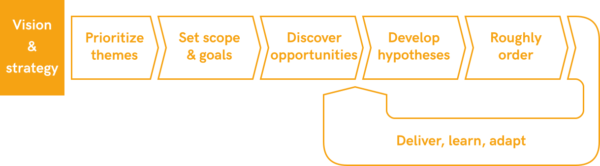
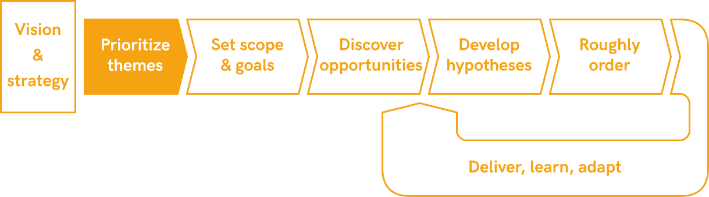
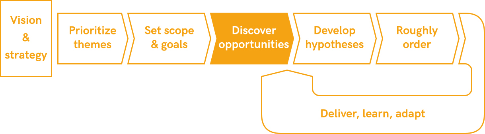
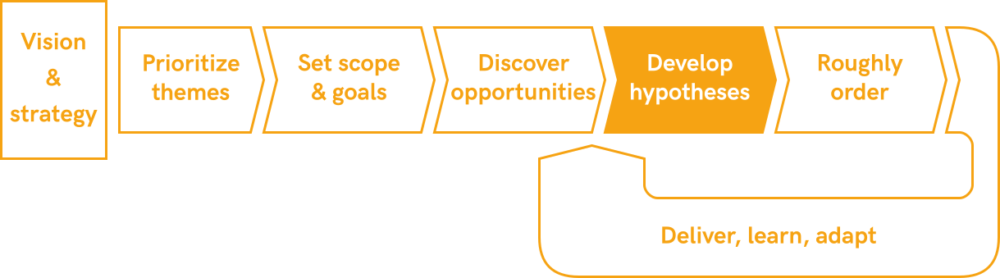
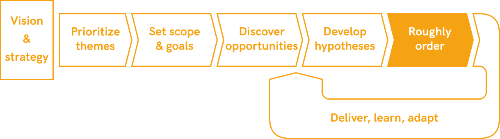
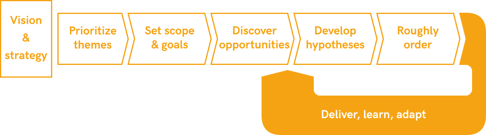

How Do You Create a Product Roadmap?
Moving away from a GANTT chart of features and dates
I was recently asked, “How do you create a product roadmap?” In a world where we want to prioritize outcomes over outputs, run a continuous discovery process, and iteratively deliver while constantly learning, the answer to the question is not straightforward.
To even attempt an answer to this question, we have to first come to an understanding of what the word “roadmap” even means in today’s product development context. In 2019, it definitely should not be a GANTT chart of features and dates. A modern roadmap should:
- …map out themes, not features;
- …include time horizons, not dates;
- …have higher granularity in the near term than further out.
In the following, I will describe an archetypical process to create a product roadmap. Of course, when actually creating a roadmap, this process needs to be further detailed in how it interfaces with the planning, goal-setting, and product development processes already in place.
The process follows these steps:

While the depiction above looks very linear, there will in reality be more iteration and parallelization (we’re not doing waterfall software development, and we shouldn’t build our product roadmap in a waterfall fashion).
Vision & strategy

The basis for the roadmap creation process is the product vision and strategy. The product roadmap is the plan for how you will deliver on product vision and strategy, so needless to say, they have to be in place first.
Product vision and strategy — like “roadmap” — are not clearly defined terms. The product vision should describe the purpose for creating the product, by describing the idealized, high-level benefit that the product should bring to the world. The product strategy needs to be more specific, defining:
- …how value will be delivered to your customers,
- …how the product is differentiated from the competition,
- …how you are making money from the product (the business model).
The product strategy may also be linked to strategic goals that have a longer time horizon than typical (quarterly) goals. For example, at Yammer, our strategy for a while was to focus on teams working in Yammer groups, and we had a yearlong goal of reaching a certain number of such groups; or at 8fit, one of our strategic objectives was to increase customer lifetime value (LTV), and we had a yearlong goal of moving a certain percentage of new billings to credit card (as opposed to through the app stores).
Prioritize high-level themes (3–12 months)
The first step in creating the product roadmap should be determining the high-level themes that could be worked on so as to deliver on the product vision, strategy, and strategic goals. These themes should be quite broad, such as “improve the new user experience,” “increase conversion to the pro version,” or “deliver more value to customer segment X.”
These themes are then prioritized based on how much they contribute to the product strategy. Quantitative and qualitative research should inform this prioritization. For example, using key metrics for engagement, retention, and monetization to identify the biggest improvement opportunities, or running user tests to determine where the product falls short in delivering the desired value to customers. Selecting and prioritizing themes is mostly the responsibility of senior product and company leadership.
Once you have prioritized the themes, you can put them on a rough time axis: what themes should we start working on right now? What themes do we work on next? What themes will we tackle further in the future?
How many of these themes you can tackle simultaneously depends on the size of the team and the magnitude of effort involved in every theme. As a rough rule of thumb, I would say that you need at least 3 product managers and 10+ developers before you start working on more than one theme at a time (if you have more themes you consider important, opt for sequencing them instead of parallelizing in order to increase focus).
How the themes are then anchored in the organization depends on your team’s overall structure. At Yammer, we ran an initiative model where we spun up initiative teams that functioned for 3 to 12 months specifically to work on one theme and had a cross-functional team dedicated to them. At 8fit, we had permanent cross-functional feature teams by area of the app and determined themes that would either be specific to one feature team or span across multiple feature teams. One example was the theme of “increase engagement in the first two weeks,” which was relevant for the workouts and meals feature teams.
The outcome of this step is the highest abstraction level of your roadmap: A list of themes by time horizon.
Set scope and goals for short-term themes

For the themes that you will start working on right away, you then need to further define the scope and goals. This scoping and goal-setting is ideally done as part of the organization-wide goal-setting process, for example, using quarterly OKRs. Since a theme might be tackled for longer than one goal-setting period (e.g., over multiple quarters), scope and goals for an initiative might evolve over time.
The scoping process is similar to the overall theme identification process, only “zoomed in.” Within a theme like “improve new user experience (NUE),” you use qualitative and quantitative research to determine the biggest improvement areas, by asking questions like “where do we see the biggest user drop-off?” or “where do new users get stuck?”
Goals should then be set for the theme that measure improvement within that scope. In the NUE example, you might set goals for increased conversion rates along a sign-up funnel, or engagement and retention goals for new users, depending on the scope.
Good scoping and goal-setting are essential to empowering the cross-functional team(s) working on the theme. The scoping and goal-setting process should be done as a negotiation between the responsible teams and senior product leadership. Ideally, the research that feeds into scoping is done by the team (or parts of the team) that will later work on the theme — this enables them to fully own problems and solutions.
Discover opportunities within the theme
With the framework of scope and goals for each theme set, it’s time for the cross-functional teams working on the short-term themes to start working independently. The teams should be empowered to conduct research (qualitative and quantitative) and generate ideas to reach the goals for the theme, possibly with reviews by product leadership.
Following the double diamond design process, the first step should be to discover opportunities within the theme (diverging). Opportunities could be problems that customers have with the existing solution, unmet customer needs, or ways to extract additional business value from the value chain.
These opportunities should then be prioritized (converging) by their potential to contribute to the theme goals (if your goals have been set well, this will be a good proxy for strategic fit and/or business value). Since you aren’t thinking about solutions yet at this stage, you can’t estimate the required effort as an input to a real “ROI” type prioritization. Instead, your best bet is to go with a rough guesstimate of the complexity of pursuing opportunities.
Develop hypotheses to address the opportunities

For the prioritized opportunities, you then develop ideas for how they might be addressed. This is the second part of the double diamond process, so you diverge again by generating ideas and then converge by selecting the ones that are most likely to address the opportunity. This process is owned by the cross-functional team working on the initiative.
In product development, you can’t be certain that an idea to address a certain opportunity will actually deliver the value (to the customer or business) that you hope for. Therefore, every improvement idea should be formulated as a hypothesis (or series of hypotheses) that needs to be validated. This hypothesis should be formulated in a way that you learn something (for example, about customer needs, preferences, or behavior) even if it is invalidated. For each hypothesis, you then also decide what the quickest and/or best way of validation is: customer interviews, prototypes, or building a feature and A/B testing it.
Sometimes, while developing hypotheses to address an opportunity, you might realize that you’re not finding promising hypotheses, or that your ideas have a higher complexity than initially guesstimated. In these cases, it can be best to go back to the previous step and prioritize a different opportunity of the same theme instead — the process shouldn’t be understood as being completely linear.
Roughly order the prioritized opportunities

You can now put the prioritized opportunities and the validation of the associated hypotheses in a rough order in which the team will work on them. There are three big principles that drive this ordering: ROI, dependencies, and delivery rhythm.
ROI (return on investment) is often mentioned as a prioritization method: of course, you should work first on opportunities that promise to create a lot of value with little effort. The biggest problem with this method, however, is that it is rarely clear which opportunity will yield the greatest return, due to the uncertainty mentioned above. Therefore, in many cases, the ROI criterion won’t yield a reliable ordering.
Dependencies are also an immediately obvious ordering constraint: opportunities or hypotheses that a lot of other work depends on (within or outside of the team) should be worked on sooner.
Delivery rhythm is a slightly less obvious criterion: in order to keep up team morale and allow for the most effective learning, you want to keep a relatively steady rhythm of delivering on opportunities. It is, therefore, best to mix big bets (high potential value, but high uncertainty and/or effort) and small bets (smaller value, lower uncertainty and/or effort).
It is also important to note that this ordering is not a prioritization: at this point, you should already only be working on prioritized opportunities. If you find in the ordering process that you have way more work than you can possibly fit in the time available (e.g., in the period that your goals are valid for), then you should go back and deprioritize some opportunities.
The outcome of this step is the closest you should get to a “traditional” roadmap: you have a long-term horizon of themes; for the medium term, theme scopes, objectives, and opportunities; and for the near term, an ordered list of hypotheses to address opportunities along with ideas for validating them.
Deliver, learn, adapt

Now that you have a roadmap, it’s time to start building (or more accurately, executing the plans made for validating the hypotheses). Of course, following lean principles, you shouldn’t just mindlessly follow the previously laid out plan, but rather revisit and adapt the prioritization of opportunities as you collect lessons learned (by validating or invalidating hypotheses). Some opportunities might become more interesting and warrant more work than initially expected, while others may turn out to be dead ends.
Similarly, you should regularly revisit the themes you work on. Often, it will be too much overhead to constantly do that. Nonetheless, it is worth stepping back, e.g., every planning cycle (once a quarter), and not just deciding whether to move on to the next theme on the roadmap, but also whether the prioritization of themes on the roadmap still matches what the organization has learned since the last cycle.
I hope this article was helpful. If it was, feel free to follow me on Twitter where I share thoughts and articles on product management daily.